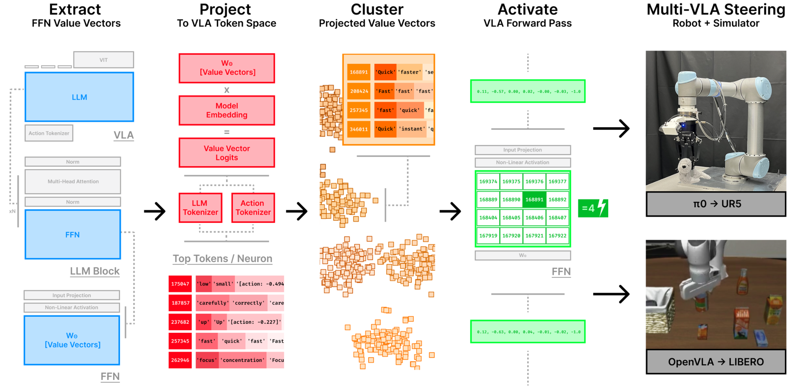
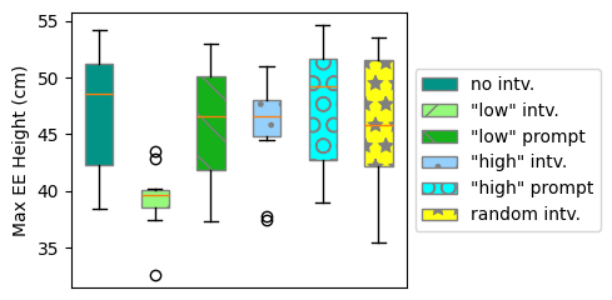

论文笔记：Mechanistic Interpretability for Steering Vision-Language-Action Models
论文笔记：Mechanistic Interpretability for Steering Vision-Language-Action Models
1. 背景信息与核心判断
- 作者 / 团队：Bear Häon、Kaylene Caswell Stocking、Ian Chuang、Claire Tomlin；UC Berkeley EECS。
- 发表：CoRL 2025，PMLR 305:2743–2762；正式发表页。
- 阅读版本：arXiv:2509.00328v1 全文，2025-08-30，覆盖正文与附录 A–C；项目页。实验与图号按 v1 记录，未运行代码或复现实验。
值得记住的四点：
- VLA 虽然输出动作 token，FFN 权重向量在语言词表中的投影仍保留可读语义；作者利用这些词选择干预对象，不需要训练 SAE。
- 方法是把少量 FFN 神经元的激活覆盖成固定值，让对应输出方向更直接地影响后续动作计算。
- 模拟和真机都出现方向符合预期的动作变化，但真机 low/slow 比 high/fast 更有效，尚不是对称、连续、可校准的控制旋钮。
- 干预无需新增训练，不等于基础策略无需任务微调；改变动作也不等于提高成功率或安全性。 真机速度实验尤其要区分预测动作与真实闭环执行。
2. 关键问题：知道“低一点”，为什么未必能让机器人低一点？
Golden Case：把玩具企鹅放进篮子。 原文的 UR5 任务中，训练示范包含低、中、高三种运输高度，但指令都只写“place penguin in basket”。部署时若希望企鹅沿更低的轨迹移动，给 prompt 加上“low”影响较弱；作者尝试直接激活模型内部与 low 对齐的神经元（§4.2、Appendix C）。
困难在于：语言中的“低”与动作 token 的具体序列之间，没有显式高度控制接口。VLA 通过模仿学习获得从图像、状态和任务指令到动作的映射，不能像传统规划器那样直接调路径高度约束。
本文追问两个不同层次的问题：语言语义是否还存在于 VLA 内部？如果存在，它是否仍能影响物理动作？词表投影回答前一个问题，实际干预才为后一个问题提供证据。
3. 关键方法：用语言命名 FFN 写入方向，再覆盖其激活

Figure 1 应关注离线筛选与在线干预的分工：离线从权重中找语义方向；在线图像和指令仍走原策略，只在 FFN 内覆盖少数系数。无需为了找方向额外收集激活训练集，是它相对 SAE 的主要实际优势；代价是只能直接利用与单神经元轴对齐的特征。
沿企鹅任务走一遍
① 读取已有策略的 FFN 权重。 输入仍是双相机图像、UR5 六个关节位置、夹爪位置与任务指令。把每层 FFN 输出矩阵拆成 value vectors：每个神经元对应一个固定的 residual 写入方向。这里的 value vector 属于 FFN，不能与 attention 的 V 向量混淆。
② 用语言输出头给方向命名。 把每个 value vector 投到输出词表，查看高分 token。真机实验取 top-10 中目标关键词出现频率最高的六个向量：企鹅任务分别搜索 low / high；速度任务搜索 slow + safe 或 fast + risk（Appendix C.3、Table 2）。这种“聚类”在真机部分实际是按词人工筛选，不是训练出的概念分解器。
③ 固定模型权重，在推理中改激活。 对 low 组的六个神经元使用系数 10；未选神经元保留原激活。由此改变 FFN 写回 residual stream 的结果，再经后续 transformer 和动作解码，输出关节与夹爪的 action chunk。企鹅搬运的实际 rollout 显示 low 组最高运输高度下降，而 high 组接近原策略。
覆盖激活到底改变了什么？
论文 Eq. (1)–(4) 将 FFN 写成：
其中 $x\in\mathbb R^n$ 是该层输入，$f_i(x)$ 是输入依赖的中间激活，$w_i\in\mathbb R^n$ 是固定输出方向，$\mathcal S$ 是按语义选中的神经元集合。由上式直接得到：
这不是把原激活乘以 10，也不等价于每次加同一个 residual 向量。 虽然 $\alpha$ 固定，真正的位移还取决于原来的 $f_i(x)$。如果原激活已经大于 $\alpha$，覆盖甚至会降低该方向的系数。因此论文文字中的“upweight”应结合覆盖公式理解。
OpenVLA 用 PyTorch hook 在 down_proj 处实现，π₀ 系列修改 JAX FFN；复现时应核对是否覆盖 down projection 的输入中间维度。Appendix A 还讨论改 gate_proj 的变体，称探索实验表现近似，但它保留另一支输入依赖项，与直接覆盖完整中间激活不是同一算子。
自动找 up 组时做了什么？
模拟深度实验使用 kNN：对每个向量取语言输出头投影的 top-5 token，以其 logit 的 softmax 为权重平均输出 embedding；按余弦距离构造近邻簇，再选中心与目标词 up 最相似的簇。early、late、full 三种候选范围各自重新聚类和选簇，簇规模为 10、20、40（Appendix B.3）。
这避免为每个实验手挑 up 向量，但“词向量相近”只是候选筛选假设：up 也可能是短语或抽象语义，不能仅凭命名就认定其控制物理向上。论文的 temporal depth 指网络深度，不是机器人轨迹的时间阶段。
4. 数据与设置：steering 零训练，策略先适配
| 用途 | 模型与数据 | 决定理解的设置 |
|---|---|---|
| 语义保留分析 | PaliGemma-3B 与 π₀ 系列；π₀-FAST 与 DROID 微调版本 | 检查静态 value vectors 的 top tokens，不是统计实际 rollout 激活 |
| 模拟干预 | 7B OpenVLA，已微调的 LIBERO-Long checkpoint | 10 个长程任务；快慢实验每配置每任务 10 次 rollout，确定性 seed 配对；H100 |
| 真机高度 | 3B π₀-FAST，UR5 + 双相机 | 75 个示范：低/中/高各 25；均不在 prompt 标高度 |
| 真机速度 | 单独微调的 π₀-FAST | 120 个示范：三种速度 × 两个目标盘颜色 × 每组合 20；prompt 只区分盘颜色 |
两个真机任务分别做 LoRA：各 5,000 steps，batch size 32，action chunk size 10；数据记录频率 10 Hz，采用官方 UR5e 预设 normalization（Appendix C.1–C.2）。因此无监督的含义是没有“快/慢/高/低”语义标签，而不是没有对应运动风格的示范，也不是机器人凭空学会这些行为。
5. 关键结果：存在可干预方向，但控制效果有边界
5.1 语义没有消失，证据来自权重投影
作者每层随机取 10 个 value vectors；top-30 中至少四个 token 有共同模式即判为有组织，再区分语义模式与词法模式。PaliGemma 与 π₀ 的可解释模式比例相近（Figure 2a、Appendix B.1）。Figure 2b 显示每层都存在 action token 投影，末层最多。DROID 微调前后的显著 token 频次变化则主要来自 action tokens（Figure 3）。
这支持“训练后仍有可供语言命名的写入方向”，以及“动作相关投影不限于最后几层”。它没有直接测量机器人运行时有多少计算是语义推理，也不能单凭静态投影证明语义与动作在每层如何组成计算链。引言的“少于 25% 神经元被重连”不宜直接当作运行时神经元功能占比。
5.2 模拟：fast 相对 slow 增加动作幅度，不是成功率提升
快慢实验手选 10 / 20 个向量，覆盖系数扫描 2、4、6、8、10、20。§4.1 报告 fast 组相对 slow 组的末端位移平均增加 27.73%，某些配置最大增加 148.54%（Figure 5a）。这说明语义筛选的两组向量能造成动作幅度差异；对照是 slow 组，不是未干预策略，更不是任务成功率。
作者同时报告 10 个配对比较均 $p<0.001$，但效应量区间含负值（$d=-0.091$ 到 $1.419$）；“10 个比较”与上面 12 种簇规模/强度组合的对应关系也未在正文逐项展开。[?] 精确的统计聚合与配对单位需结合实验代码或原始结果确认，不据此声称所有配置均稳定同向。
up 深度实验中，平均 Y 位移 full / late / early 分别为 0.098 / 0.086 / 0.007（§4.1、Figure 5b；原文该处未明确单位）。晚层平均作用更强，但候选神经元随深度条件改变，因此证据同时混合了层位置、簇内容与下游传播差异，尚不能独立归因为“运动语义集中在晚层”。
5.3 真机：low 的闭环证据更直接，slow 是相同观测下的预测比较
对照包括未干预策略、同规模随机向量干预，以及在 prompt 前加目标词。真机固定六个向量、系数 10，随机组在评估期间保持不变（Appendix C.3）。

Figure 7a 应看 low intervention 相对原策略和随机组的降低，以及 high intervention 并未对称升高。 每个条件实际运行 10 次 rollout，统计各次的最大末端高度；不从图上臆造精确均值。原文 §4.2 有“maximum across 10 rollouts”的措辞，但图注明确展示十次 rollout 的分布，应按图注理解统计对象。
速度实验的设计不同：每个时刻同时运行所有策略变体，实际只执行未干预策略动作，让它们面对同一观测序列；再比较各变体预测动作的逐步末端位移（Figure 7b）。slow 的预测位移更小；fast 与原策略相近。这个对照减少了观测轨迹变化的混杂，但没有展示执行 slow 预测后能否持续变慢且仍完成任务。
作者认为原策略可能已偏 high / fast，这能解释不对称现象，但没有通过不同风格占比的数据实验验证。Prompt 基线也只是前缀拼词，例如 low + 原指令、slow safe + 原指令；结果说明优于这些写法，不能外推为优于经过充分设计的自然语言控制。
6. Insights：下一步应验证什么？
1. 最值得复用的是低成本候选发现，而不是把词表当作语义真值。 静态权重投影不需要 SAE 训练数据，却找到了能影响动作的少数方向；这适合先筛候选，再付出闭环实验成本。下一步应在未参与选参的任务上，比较词表筛选、随机组和按动作统计筛选，并同时记录目标属性、成功率与停滞率，避免把“动得少”误认为“按要求慢”。
2. slow/safe 与 fast/risk 的混合，恰好暴露了概念识别的难点。 Table 2 的干预组混合速度词与风险词；因此观察到减速既不能说明 safe 被独立控制，也不能说明单一 slow 特征就是因果机制。我会分别干预 slow-only、safe-only、二者并集，再用碰撞、间距等独立指标测量安全性，检验是不是通过非特异性的动作抑制取得减速。
3. 固定覆盖可能让控制强度随状态漂移。 从 $\Delta x$ 公式可见，同一个 $\alpha$ 在不同状态下并不产生同样大小甚至同方向的系数变化。要把它用于可校准控制，应比较固定覆盖、相对原激活的增量编辑和按层尺度归一化三种方式，并绘制属性变化与任务成功率随强度的联合曲线。论文已证明部分方向可操作，尚未证明这个接口能稳定满足物理约束。
7. 连接与发现
- MOC-Interpretability — Topic：把词表投影的语义候选推进到 VLA 动作干预，同时保留静态解释与闭环机制证据的区别。
- MOC-VLA — Topic：VLA 机制可解释性线起点，从词表投影筛语义候选并做动作干预，揭示干预效应的非线性。
- Event-Grounded-Sparse-Autoencoders-for-Vision-Language-Action-Policies-事件锚定与因果边界 — 本文从语言词表筛候选，Event-SAE 从机器人事件筛候选；两者都需要回答“行为变化是否对应特定语义”，可对比候选发现成本与闭环验证强度。